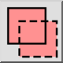

Kruis selectie
Sommige selectie functies kunnen worden gebruikt in de kruis
selectiemodus. In deze modus worden niet alleen objecten geselecteerd die
zich volledig binnen een bepaald gebied bevinden, maar ook objecten die zich
slechts gedeeltelijk binnen het gebied bevinden. Deze selectie is ook bekend
als "kruis selectie".
Selectiemodus
Met sommige selectie functies kunt u een selectiemodus kiezen in de opties
werkbalk. De beschikbare selectiemodi zijn:
- Selectie vervangen:

Vervangt de huidige selectie door de nieuwe selectie
(standaard).
- Toevoegen aan de selectie:

Voegt de selectie toe aan de huidige selectie.
- Verwijderen uit de selectie:

Verwijdert de selectie uit de huidige selectie.
- Kruisen:

Alleen objecten die al geselecteerd zijn en die voldoen aan de
criteria van de selectie functie worden geselecteerd.